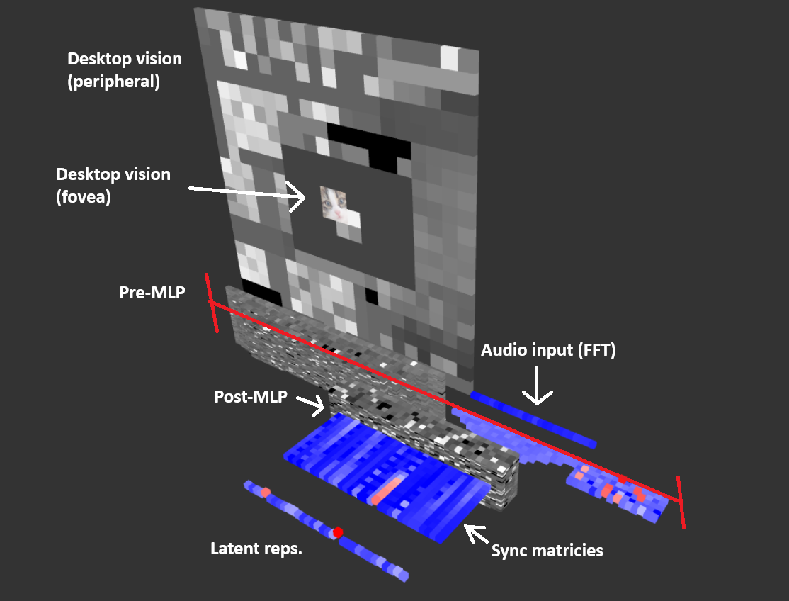

Biologically-inspired Neural Network
For a long-time now, I have been deeply unsatisfied with the current state of neural networks and specifically LLMs. The thing that bothers me the most are people saying things like, "OMG these chatbots like ChatGPT are so good at thinking!!!", stating how human-like they are. They do not think like humans do.
Here is the clear issue with neural networks:
- They are first trained, then used in inference. Their neural weights do not change during runtime.
- They need a lot of data since they cannot "learn" in the traditional sense of learning through experiences.
- They are not time-dependent. Humans never stop thinking, unlike LLMs.
Recently, I came across a paper released by Sakana AI called the Continuous Thought Machine. It's an incredible paper and rethinks the traditional methods of neural networks. In short, they have a MLP that loops over ticks, instead of being feed-forward one time like most neural networks. In the output layer, they have per-neuron models that hold a history of information from previous ticks. These outputs are also fed into a history, a sync matrix is calculated, then finally the latent representation is computed. The model is trained like a traditional network, but only pull the output from the latent representation if the confidence is high enough. The outputs from the per-neuron models are fed back into the input, additionally, the environment input is modulated with a multi-attention head, which acts to preserve the current tick's thoughts onto the next tick. This makes the runtime indeterminant, but their paper shows incredible results.
I think this is half the key to having true artificial intelligence. The other key is to learn dynamically instead of using backpropagation.
With this, I came up with my own model that is Biologically-inspired:
Here is the architecture:
- Looping MLP with sensory input (audio and vision)
- Biological neuron simulation instead of linear function with activation. Specifically the FitzHugh-Nagumo Model, which is a simplified version of the Hodgkin-Huxley model.
- Dynamically sized vision input.
- Sync matrix + latent representation
- Dynamic neuron weight updates via systems to act as forms of neuroplasticity.
There's a lot here and honestly it seems pretty unlikely to be fruitful but I'll keep trying. I've implemented all parts except the last bullet point. Here is a teaser image

Optimal Team Composition Finder

This a project I have been working on for many years. I went into the details of this project on my blogs page. In summary, I developed a neural network to identify optimal characters to play in a competitive game by identifying key combinations of champions that synergize well while being good against the enemy champions.
Things I used and learned:
- Data Augmentation
- One-hot encodings
- Embedding layers
- Cross-validation
The problem itself is very difficult. Even if one team has a perfect team composition, those players can still be worse, or not be in the best condition, not focused, etc. With my best efforts, I was able to achieve an accuracy of 55% which seems to be the limit for this problem. I found commercial tools online that had basically the same accuracy with 10x the data I had.
The largest boost to my accuracy was switching to embedding layers. Eliminates specific champion trends and treats champions more like specific types of gameplay. This solved the overfitting issue.
You can read more on this on my blog page!
Koi Fish

This is the project displayed on the home page. This was a larger endeavor than I thought initally.
Some of the core things I learned/used in this project were:
- Mesh Instancing
- GTLF 2.0
- Blender (yes I learned 3D modeling for this)
- Vertex and Fragment shaders (offloading onto the GPU)
- Boids algorithm for flocking(?) fish
Boids by itself fairly trivial, but an additional requirement I made was for the fish to A) have boundary logic, and B) also swim for food when the user feeds them. This made the project a bit more challenging. Also, you might have noticed if you refreshed the page a couple times, is that the koi fish color patterns are random. I did this by applying a 3d Simplex noise function to the fish with per instance random offsets in the vertex shader. Colorful (and unique) fish!
I also learned how to 3D model, and to create materials. I happily embraced the low-poly style since anything more would be way too difficult.
In '_banner_pixelated.js', I attempted to make a pixel-art styled renderer for this, but it didn't feel quite right so I scrapped it.
Apple Destroyer
This is a project solving a website game called Fruit Box by GameSaien, and I explained this project on my Github.
Here is a short rundown of the game.
- There's a board of apples with numbers 1 through 9
- The player can make rectangular selections
- Selections that sum to 10 pop the apples and you get points for each apple.
I spent days playing this game but the highest score I got was 109 out of 170. Can we do better?
In this project I learned many concepts.
- Monte Carlo Tree Search algorithm
- Heuristics
- OpenCV
- pyautogui
Unfortunately, I couldn't cause an apple extinction...